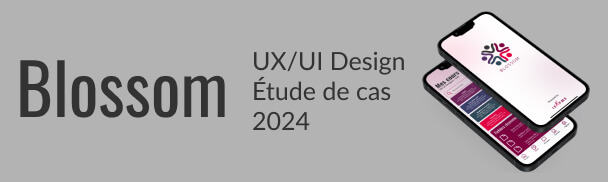
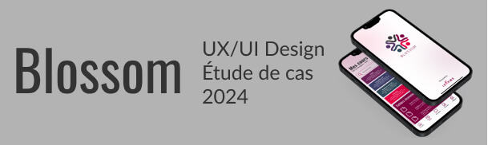
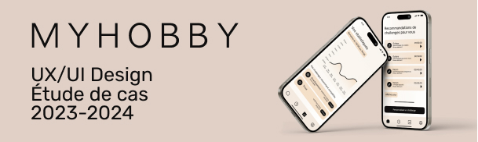
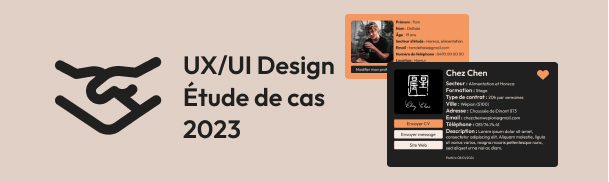
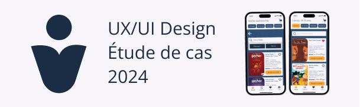
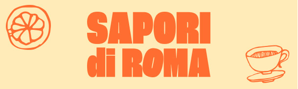
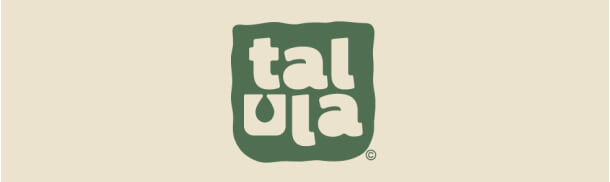
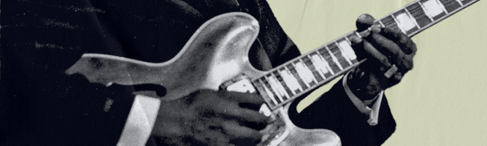

Optimisation d'une plateforme d'apprentissage
Projet scolaire en groupe. Optimisation de l'UX ainsi que l'UI d'une application mobile déjà existante "itslearing" afin de rendre celle-ci plus attrayante pour les utilisateurs.
Optimisation d'une plateforme d'apprentissage
Projet scolaire en groupe. Optimisation de l'UX ainsi que l'UI d'une application mobile déjà existante "itslearing" afin de rendre celle-ci plus attrayante pour les utilisateurs.
Application mobile fictive afin de motiver à pratiquer un hobby
Projet fictif d'une application mobile permettant de gérer son temps afin de pratiquer un/des hobby(ies). L'idée est de motiver les personnes afin de pratiquer une activée sur le long terme.
Itération de l'UX et de l'UI d'un site internet d'offres de stages
Projet scolaire afin de proposer une refonte d'UX et d'UI Design pour un site internet (tout en gardant la structure de base du site internet) de recherche de stage déjà existant, StageFacile.
App. mobile fictive afin que des utilisateurs achètent des livres
Projet scolaire fictif. Audit de différents sites internet de vente de livres, recherche UX afin d'y proposer une application mobile attrayante et percutante dans l'achats de livres en tout genre.
Création d'une landing page pour un restaurant italien
Projet fictif, le projet porte essentiellement sur l'UI design afin d'y créer une landing page avec une atmosphère appétissante. Création également d'un logo dans Adobe Illustrator.
Projet à determiner Projet à determiner Projet à determiner
Projet à determiner Projet à determiner Projet à determiner Projet à determiner Projet à determiner Projet à determiner Projet à determiner Projet à determiner Projet à determiner .
Identité visuelle pour du rhum jamaïcain Adobe Illustrator
Projet scolaire fictif. Recherche, inspiration, croquis et réalisation d'un logo dans Adobe Illustrator.
Création d'une ville en isométrie dans Adobe Illustrator
Projet scolaire (examen). Recherche, inspiration et réalisation d'une ville (isométrie) dans Adobe Illustrator.
Quelques affiches dans le style vintage avec Adobe Photoshop
Créations de quelques affiches, une majeure partie de ces affiches ont été créées dans Adobe Photoshop.
Texte à déterminer
Texte à déterminer
Texte à déterminer
Texte à déterminer
Texte à déterminer
Texte à déterminer
Texte à déterminer
Texte à déterminer